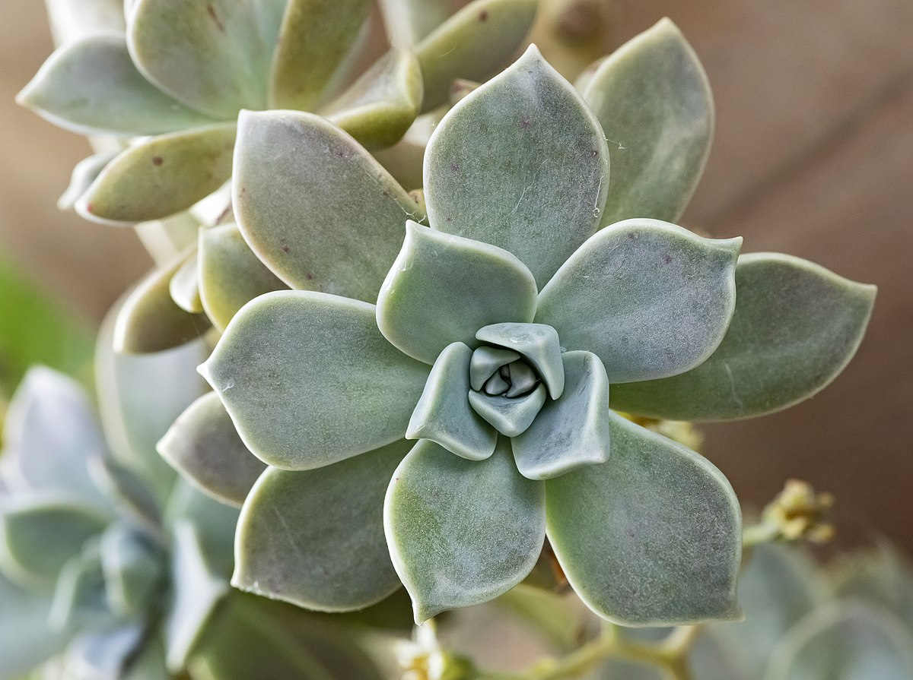

La Belleza de México: Suculentas y Flores

Las suculentas son un tipo de plantas que han desarrollado adaptaciones especiales para sobrevivir en ambientes secos y áridos. Estas adaptaciones les permiten almacenar agua en sus hojas, tallos o raíces, lo que les otorga una apariencia carnosa y jugosa. Su origen se remonta a regiones desérticas y semiáridas de todo el mundo, incluyendo México.
Nuestro país es reconocido mundialmente por su rica biodiversidad, y las suculentas no son la excepción. Desde los desiertos del norte hasta las selvas tropicales del sur, México alberga una gran variedad de especies endémicas, es decir, que solo se encuentran en nuestro territorio.
- Adaptaciones únicas: Las suculentas mexicanas han desarrollado formas y colores extraordinarios para adaptarse a las condiciones climáticas extremas de nuestro país. Algunas tienen espinas para protegerse de los animales, mientras que otras presentan recubrimientos cerosos para reducir la evaporación del agua.
- Usos tradicionales: Las suculentas mexicanas han sido utilizadas por las culturas indígenas desde tiempos ancestrales para diversos fines, como alimento, medicina y materiales de construcción.
- Amenazas: Desafortunadamente, muchas especies de suculentas mexicanas se encuentran en peligro de extinción debido a la pérdida de su hábitat, la extracción ilegal y el cambio climático.
Suculentas Mexicanas
- Echeveria elegans
- Sedum morganianum
- Graptopetalum paraguayense 
Variedad de Flores Mexicanas
- Dalia
Es una flor que representa a México a nivel mundial. Originaria de nuestro país, esta hermosa especie fue cultivada por los aztecas y hoy en día es admirada por su gran variedad de formas y colores.
- Cempasúchil
Cuyo nombre proviene del náhuatl "cempohualxochitl" que significa "veinte flores", es una flor emblemática de México, especialmente asociada con las celebraciones del Día de Muertos.
- Orquídea
Son una de las familias de plantas más grandes y diversas del mundo, conocidas por su belleza exótica y complejidad.